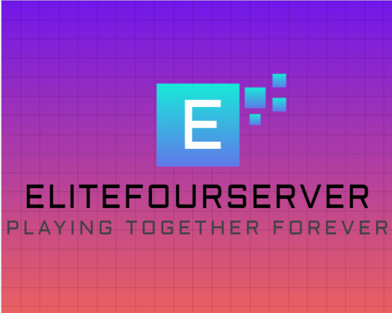

Minecraft Server Site
Minecraft Server Site was created to enhance the process of getting new players into the server. It provides a history list of every player that has joined the server thus far, allowing for better player management and engagement.
View ProjectStudent Organizer

Student Organizer is designed to help high school students stay organized. With features like a calendar, calculator, financial helper, and even a game of Snake, it offers a wide range of tools to assist students in managing their academic and personal lives effectively.
View ProjectFix IP Address

This project provides solutions for fixing expired IP addresses on different operating systems.
View Project